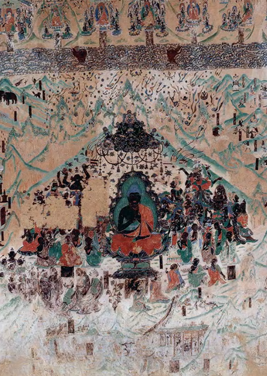
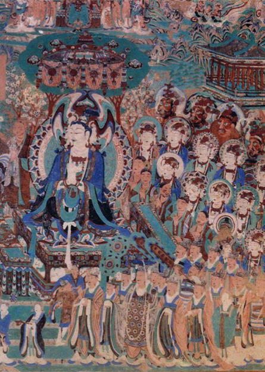
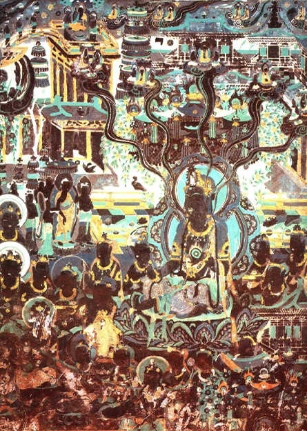
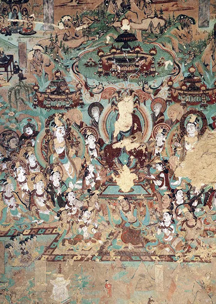
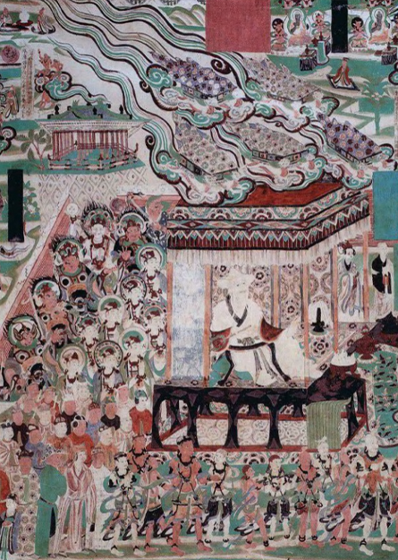

凡依据佛经绘制之画，皆可称之为"变"。然今之"经变"，既有别于本生故事画、因缘故事画、佛传故事画，又有别于单身尊像，专指将某一部乃至几部有关佛经之主要内容组织成首尾完整、主次分明的大画（如涅盘经变）。
莫高窟有经变三十三种，持续时间长的有西方净土变、东方药师变、弥勒经变、法华经变、维摩诘经变，数量最多的是西方净土变。敦煌经变内容丰富，形式多样，除了佛经内容外，大量的社会生活内容在经变画中得到生动的体现。许多经变画技巧高超，堪称艺术珍品。
在壁画中持续时间长的是西方净土变、东方药师变、弥勒经变、法华经变、维摩诘经变；数量最多的是东方药师变。经变画内容丰富，形式多样，万花筒般的社会生活，可以从中得到反映，艺术家之奇思可以有此领域内驰骋纵横，人们之愿望藉以得到升华。




